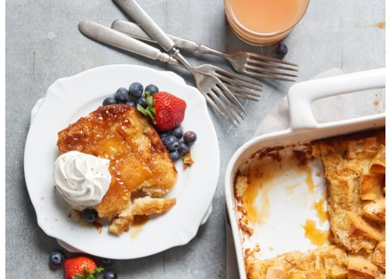

Easy French Toast Casserole

Delicious and decadent, simple spin on French toast.
Got the idea from a bed and breakfast in the south.
Add additional ingredients; we like blueberries and cream
cheese, cinnamon apples, nuts, and dried fruit!
This recipe takes fifteen minutes to prep and thirty-five minutes
to cook. There is an additional eight hours to make a total
of oeight hours and fifty minutes for this dish. This delicious french
toast casserole yields eight servings.
Ingredients
- 1 cup brown sugar
- 1/2 cup butter
- 1 (8-ounce) loaf crusty French bread,
cut into bite-size pieces,
or as needed
- 2 cups milk
- 6 eggs
- 2 teaspooms vanilla extract
- 1 pinch ground cinnamon, or to taste
- 1 tablespoon brown sugar, or as needed
Steps
- Grease a 9x12-inch baking dish.
- Stir 1 cup brown sugar and butter together in a saucepan
over medium-low heat until butter melts and sugar dissolves into
butter, 2 to 4 minutes. Pour into prepared baking dish and spread
a 1 1/2- to 2-inch layer of bread pieces over the top.
- Beat milk, eggs, and vanilla extract together in a bowl; pour milk
mixture over bread into the baking dish and move bread as necessary
to ensure all bread is absorbing liquid. Sprinkle cinnamon over the top.
Cover the dish with plastic wrap and refrigerate, 8 hours to overnight.
- Preheat oven to 450 degrees F (230 degrees C). Remove and discard plastic
wrap from baking dish and sprinkle remaining brown sugar over the top of
the bread mixture.
- Bake in the preheated oven until browned and bubbling, about 30 minutes.
Nutrition Facts
Per Serving: 382 calories; protein 10.2g; carbohydrates 48.1g; fat 17g;
cholesterol 174.9mg; sodium 352.1mg